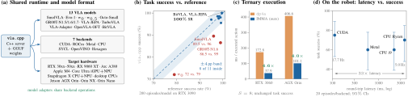
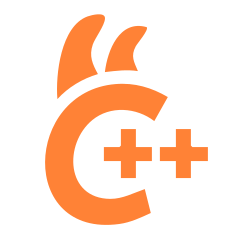
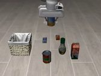
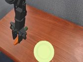
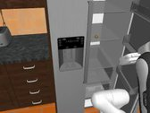
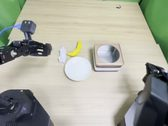
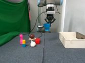
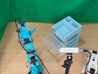

vla.cpp: A Unified Inference Runtime for
Vision–Language–Action Models
Thirteen vision–language–action policies, one C++ runtime, seven
backends — from a desktop GPU down to an 8 GB Jetson, with no PyTorch at inference
time.
Updated since submission. This page describes
vla.cpp as it is now, not as in the submitted paper: thirteen models instead of
eleven, seven backends instead of five, newer LIBERO and latency measurements, a third robot,
an SO-101 arm, and RoboCasa in simulation. Counts and
numbers here, including in the teaser figure, can therefore differ from the paper’s.
Last updated October 2026.

vla.cpp across models and hardware. (a) Shared runtime components
support thirteen VLA models on seven backends; backend coverage varies by model. (b)
LIBERO-Object success over 200 episodes per model, from the latest run on an RTX 3090,
against published rates or PyTorch reproductions (π0 and GR00T); the shaded band
marks ±4 percentage points. All three models outside it replay a different number of
actions per chunk than their upstream evaluations. Octo-Small (8%) and TurboVLA (100%) have no
reference rate and are not plotted. (c) Tensor-core execution reduces BitVLA’s client
inference time per executed action by 4.0–4.6× at S = 8. (d)
UR10e task success and 95% Wilson intervals across four backends; round-trip latency varies
by 33×. Panels (a) and (b) are updated since submission; (c) and (d) are as
submitted.
Supported backends
CUDA NVIDIA
ROCm
Hexagon Qualcomm
OpenVINO / SYCL
Metal Apple
CPU x86-64 / Arm
Abstract
Deploying vision–language–action (VLA) models on robots requires
adapting model-specific inference pipelines to heterogeneous processors and limited onboard
memory. We present vla.cpp, a unified C++ inference runtime for thirteen VLA models.
The runtime shares model loading, tensor execution, and serving while retaining
architecture-specific attention, conditioning, and action heads. Iterative policies reuse
observation-dependent computation across solver steps; regression policies use a direct
prediction path. We evaluate task success on LIBERO-Object and profile supported configurations
across seven backends on NVIDIA, AMD, Apple, Intel, and Qualcomm hardware. BitVLA completes 200/200 LIBERO-Object episodes on an
8 GB Jetson Orin Nano; a separate desktop measurement records 1.3 GiB of device memory.
A ternary tensor-core kernel accelerates its client inference by 4.0–4.6× over the
CUDA-core baseline on RTX 3060 and AGX Orin. A SmolVLA case study identifies a
positional-index precision mismatch that changes gripper commands and task success, motivating
fixed-input numerical checks alongside rollout evaluation. Physical deployments on UR10e and
ALOHA demonstrate robot integration, while separate delay and execution-horizon studies
characterize synchronous action replay.
Overview of vla.cpp. Demo footage is sped up.
Try it: what runs where
The numbers in the table below were last updated in October 2026
and may differ from those reported in the paper.
Architecture
Model bundleGGUF checkpoints
model.gguf
loads
runtimeC++ server
Unified protocol
Cross‑attention KV cache
Solver loop
Ternary kernel

llama.cpp ggml tensor backend
Hardware backends
CUDA
ROCm
Hexagon
OpenVINO
SYCL
Metal
CPU
Protobuf over ZeroMQ
request
action chunk
ClientPython · robots and simulators

LIBERO

SimplerEnv

RoboCasa

ALOHA

UR10e

SO-101
Observation
Configuration
Statistics
Instruction
Architecture. The C++ server loads GGUF weights and returns action chunks; the
client owns sensing and control. Adapters select model-specific computation — attention
pattern, conditioning and action head — while loading, tensor execution and serving are
shared, and every backend runs through the same runtime interface. Observation tokens form a
prefix whose features and projections are reused across solver steps, so an iterative head
pays for conditioning once per query rather than once per step.
Numerical validation, not just rollouts. A prediction-check tool fixes
weights, images, tokens, state, noise, masks, schedules and transforms, then compares runtime
actions against the reference on maximum absolute and relative RMS error, with intermediate
tensors to localise a discrepancy. The SmolVLA case study is what this is for: its vision encoder
maps patch coordinates to discrete indices, and computing them at a different precision moves a
value across an index boundary. Matching the reference takes the position-embedding relative error
from 0.32 to 0.003 and LIBERO-Object task 0 from 2/10 to 9/10 episodes. A rollout score alone
would not have located it.
In simulation
The explorer’s success rates are all LIBERO-Object. Two of its episodes are
shown here, run through vla.cpp on an RTX 3090, beside two clips from
SimplerEnv’s WidowX tasks and one from RoboCasa’s kitchens. On SimplerEnv, at
252-pixel input, GR00T-N1.6 reaches 80% on “put carrot on plate” and 70% on
“put spoon on towel”.
Video placeholder
libero-object-gr00t-n17-alphabet-soup.mp4
LIBERO-Object
Pick up the alphabet soup and place it in the basket. GR00T-N1.7, a
successful episode.
Video placeholder
libero-object-bitvla-butter.mp4
LIBERO-Object
Pick up the butter and place it in the basket. BitVLA, a successful
episode.
Video placeholder
simplerenv-carrot-plate.mp4
SimplerEnv
Put carrot on plate. GR00T-N1.6 succeeds in 80% of trials on this
task.
Video placeholder
simplerenv-eggplant-basket.mp4
SimplerEnv
Put eggplant in the basket. Shown as a rollout only; no success rate
is reported for this task.
Video placeholder
robocasa-smolvla-close-fridge.mp4
RoboCasa
Close the fridge. SmolVLA, shown as a rollout only; no success rate
is reported for this task.
On real robots
Three embodiments, each driven by a vla.cpp server. The UR10e and ALOHA runs use
synchronous chunked control: the client executes S actions from each chunk, then waits
for the next prediction.
UR10e · AOne task, four backends
SmolVLA fine-tuned on 80 demonstrations of a cup pick-and-place, with
S = 25 actions at 20 Hz and 20 episodes per backend.
The task. Grasp the cup, carry it to the basket, release it. All 80 evaluated
rollouts grasp and carry; every one of the 27 failures happens at release. That shared failure
mode is why binary success barely moves across backends even as latency changes by
33×.
Backend
Round trip
Success [95% CI]
Effective rate
CUDA, RTX 5070 laptop
111.4 ms
15/20 [53.1, 88.8]
17.7 Hz
Metal, Mac Mini M4
582.0 ms
12/20 [38.7, 78.1]
12.8 Hz
CPU, i9-14900HX
2164.4 ms
12/20 [38.7, 78.1]
7.1 Hz
CPU, Ryzen 7 6850HS
3652.9 ms
14/20 [48.1, 85.5]
5.0 Hz
What the rate means. Effective rate counts executed actions per
wall-clock second, so it includes robot motion as well as inference: in a blocking loop each
cycle costs the round trip plus SΔt. Between the fastest and slowest settings
the share of wall time blocked on prediction grows from 8% to 73%. Metal and Ryzen include about
161 ms of network time, and Metal runs the vision and language towers in 32-bit.
ALOHA · BEmbedded, on an AGX Orin
GR00T-N1.6 in BF16, served on the Jetson at roughly 470 ms per predicted
chunk with H = 8, S = 7 and a 1.3 s replan period. Twenty
trials per task, external overview camera, all clips at 3× speed.
Video placeholder
assets/videos/ aloha-task1-pass-3x.mp4
vla.cpp BF1618/20
Task 1 — “pick up all blocks and place them into the white box”
GR00T-N1.6 · about 49 s per completion · 3× speed
Video placeholder
assets/videos/ aloha-task2-pass-3x.mp4
vla.cpp BF1617/20
Task 2 — “trash into the box, then the banana onto the white dish”
GR00T-N1.6 · about 28 s per completion · 3× speed
And the five that failed. Thirty-five of the 40 trials succeed. The two
clips below are the minority case, kept on the page rather than cut: a partial failure that times
out mid-sequence, and one trial that does not recover at all.
Video placeholder
assets/videos/ aloha-task1-fail-3x.mp4
failurepartial
Task 1, setup 5 — timeout with blocks still on the table
one of two failures in 20 trials · 3× speed
Video placeholder
assets/videos/ aloha-task2-fail-3x.mp4
failurecomplete
Task 2, setup 5 — neither object is placed
one of three failures in 20 trials · 3× speed
SO-101 · Cπ0.5 and GR00T-N1.7 on an Intel AI board
Two policies, each served by vla.cpp on an Intel AI board with a
Core Ultra X7 358H, driving an SO-101 arm through the same drawer task. Both clips
play at 1× speed.
Video placeholder
assets/videos/ so101-drawer-pi05-1x.mp4
vla.cpp
Open the drawer, put the block in, close it
π0.5 · 1× speed
Video placeholder
assets/videos/ so101-drawer-gr00t-n17-1x.mp4
vla.cpp
Open the drawer, put the block in, close it
GR00T-N1.7 · 1× speed
Analysis
How often a robot should ask for a new chunk, and what bounds the time each call
takes.
Control · AHow long to act before looking again
SmolVLA on LIBERO-Object, H = 50, 50 episodes per setting,
evaluated on the Orin Nano.
Task success, 95% Wilson intervalThroughput S/L
Execution horizon. Raising S amortises inference over more actions
— throughput climbs from 2.8 to 109.4 Hz — but it also delays feedback.
Success varies non-monotonically up to S = 32, peaks at 49/50 at
S = 16, and falls to 19/50 at S = H, where the robot
executes the whole predicted chunk before observing again. A runtime comparison should
therefore state both S and the solver step count T. Hover over a setting for its
numbers.
Delay is not the whole story. Injecting an artificial delay after
GR00T-N1.7 inference on an RTX 4070, before each chunk reaches ALOHA, leaves success at 9/10
or 10/10 from 0 all the way to 2000 ms, with ten episodes per condition. Small samples near
100% success resolve little, but on this quasi-static tabletop task the execution horizon matters
more than the latency it hides.
Compute · BWhere the inference time goes
The ten models with BF16 weights, at the defaults of the latest benchmark
round, on the RTX 3060 and Jetson AGX Orin.
Where the work lands. Arithmetic intensity against achieved throughput for one
call at the defaults, using the p50 latencies from the explorer above. The work is counted from
each model’s runtime graphs at the benchmark’s inputs. FLOPs come from every matrix
multiply, attention included. Bytes are the weights and cached keys and values those multiplies
read, with an action head’s weights read once per solver step. Activations are not
counted, so intensities are upper bounds. Hover over a point, or tab to it, for its numbers;
N1.5, N1.6 and N1.7 are GR00T. The roof combines measured BF16 GEMM rates of 25.6 and
21.3 TFLOP/s with nominal bandwidths of 360 and 204.8 GB/s, so it shows only the
models whose multiplies run in BF16. BitVLA multiplies in int8 on the tensor cores, and
Octo-Small and TurboVLA in F32; each has a different ceiling, so none of the three is plotted.
OpenVLA-OFT does not fit on the RTX 3060.